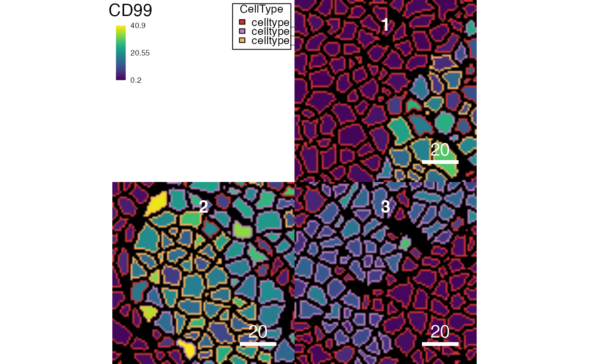
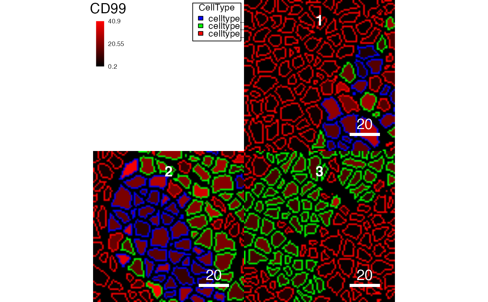

Function to visualize cell-level information on segmentation masks
Source:R/plotCells.R
plotCells.RdThis function takes a SingleCellExperiment and
CytoImageList object containing segmentation masks to
colour cells by marker expression or metadata.
plotCells( mask, object = NULL, cell_id = NULL, img_id = NULL, colour_by = NULL, outline_by = NULL, exprs_values = "counts", colour = NULL, ... )
Arguments
| mask | a |
|---|---|
| object | a |
| cell_id | character specifying the |
| img_id | character specifying the |
| colour_by | character or character vector specifying the features
( |
| outline_by | single character indicating the |
| exprs_values | single character indicating which |
| colour | a list with names matching the entries to |
| ... | Further arguments passed to |
Value
a list if return_images and/or return_plot is TRUE
(see ?"plotting-param").
plot: a single plot object (display = "all") or a list of plot objects (display = "single")images: aSimpleListobject containing three-colourImageobjects.
Segmentation mask object
In the plotCells function, mask refers to a
CytoImageList object that contains a single or multiple
segmentation masks in form of individual Image objects.
The function assumes that each object in the segmentation mask is a cell.
The key features of such masks include:
each Image object contains only one channel
pixel values are integers indicating the cells' IDs or 0 (background)
Linking SingleCellExperiment and CytoImageList objects
To colour individual cells contained in the segmentation masks based on
features and metadata stored in the SingleCellExperiment object, an
img_id and cell_id entry needs to be provided. Image IDs are
matched between the SingleCellExperiment and CytoImageList
object via entries to the colData(object)[,img_id] and the
mcols(mask)[,img_id] slots. Cell IDs are matched between the
SingleCellExperiment and CytoImageList object via entries to
colData(object)[,cell_id] and the integer values of the segmentation
masks.
Setting the colours
By default, features and metadata are coloured based on internally-set
colours. To set new colours, a list object must be provided. The names
of the object must correspond to the entries to colour_by and/or
outline_by. When setting the colours for continous expression values
or continous metadata entries, a vector of at least two colours need to be
specified. These colours will be passed onto colorRampPalette
for interpolation. Discrete metadata entries can be coloured by specifying a
named vector in which each entry corresponds to a unique entry to the
metadata vector.
Subsetting the CytoImageList object
The CytoImageList object can be subsetted before calling the
plotCells function. In that case, only the selected images are
displayed.
Subsetting the SingleCellExperiment object
The SingleCellExperiment object can be subsetted before calling the
plotCells function. In that case, only cells contained in the
SingleCellExperiment object are coloured/outlined.
Colour scaling
When colouring features using the plotCells function, colours are scaled between the minimum and maximum per feature across the full assay contained in the SingleCellExperiment object. When subsetting images, cell-level expression is not scaled across the subsetted images but the whole SingleCellExperiment object. To avoid this, the SingleCellExperiment object can be subsetted to only contain the cells that should be displayed before plotting.
See also
For further plotting parameters see ?"plotting-param"
Author
Nils Eling (nils.eling@dqbm.uzh.ch)
Nicolas Damond (nicolas.damond@dqbm.uzh.ch)
Examples
# Colour the masks based on averaged expression plotCells(pancreasMasks, object = pancreasSCE, img_id = "ImageNb", cell_id = "CellNb", colour_by = c("CD99", "CDH"))# Colour the masks based on metadata plotCells(pancreasMasks, object = pancreasSCE, img_id = "ImageNb", cell_id = "CellNb", colour_by = "CellType")# Outline the masks based on metadata plotCells(pancreasMasks, object = pancreasSCE, img_id = "ImageNb", cell_id = "CellNb", colour_by = "CD99", outline_by = "CellType")# Colour the masks based on arcsinh-transformed expression plotCells(pancreasMasks, object = pancreasSCE, img_id = "ImageNb", cell_id = "CellNb", colour_by = "CD99", exprs_values = "exprs")# Subset the images cur_images <- getImages(pancreasMasks, 1:2) plotCells(cur_images, object = pancreasSCE, img_id = "ImageNb", cell_id = "CellNb", colour_by = "CD99")# Set colour plotCells(pancreasMasks, object = pancreasSCE, img_id = "ImageNb", cell_id = "CellNb", colour_by = "CD99", outline_by = "CellType", colour = list(CD99 = c("black", "red"), CellType = c(celltype_A = "blue", celltype_B = "green", celltype_C = "red")))